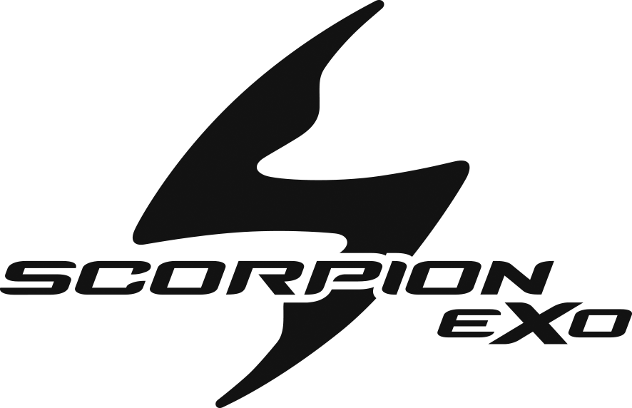

|
 |
Scorpion EXO sisakok |
|
Scorpion Covert X Uruk sisak
A Covert X sisak a csata készen áll a Scorpion Covert sisak- és lovasruházati termékcsaládjához. Folytatva a konfigurálható segédprogramok hagyományát, amely az eredeti Covert sisakkal kezdődött, a Covert X új stílussal és jellemzőkkel finomítja és élesíti megedzett városi attitűdjét. Most a Scorpion Ultra-TCT üvegszálas technológiáját alkalmazva a Covert X héja könnyebb, merevebb és jobb ütéskezelést tesz lehetővé. Újratervezett elülső szellőzőnyílások és átdolgozott belső légcsatornák hatékonyabban vezetik át az EPS levegőt. A KwikWick 3 bélés minden eddiginél kényelmesebbé teszi az utazást. A mellékelt tiszta és sötét füstöt leeresztő napellenzők akadálytalan kilátást biztosítanak az aszfaltra.
A sokoldalúság a Covert X Helmet legnagyobb sikere. Az egyedi kialakítás három különböző lovaglási konfigurációt kínál: teljes arcú, háromnegyedes és félsisakos üzemmódokat. Az öntött polikarbonát arcmaszk, a hátsó kényelmes nyakhüvely, a fülvédők és a legördülő napellenző (mindegyik mellékelve) hozzáadható vagy eltávolítható, hogy drasztikusan módosítsa a Covert X megjelenését. Egyetlen sisak még soha nem tett ennyit. A legenda folytatódik.